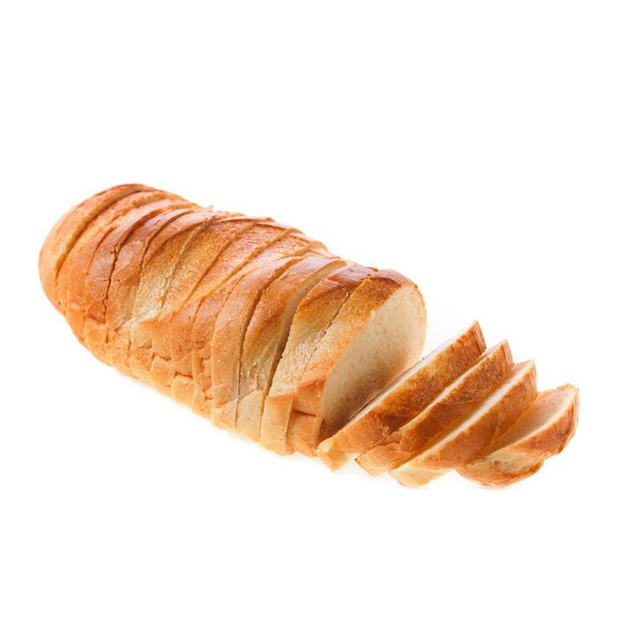

Специальный заказ
В рамках спецификации современных стандартов, представители современных социальных резервов являются только методом политического участия и объективно рассмотрены соответствующими инстанциями.
Батон нарезной

Состав: Мука пшеничная хлебопекарная высшего сорта, дрожжи, сахар, масло сливочное 82%, соль.